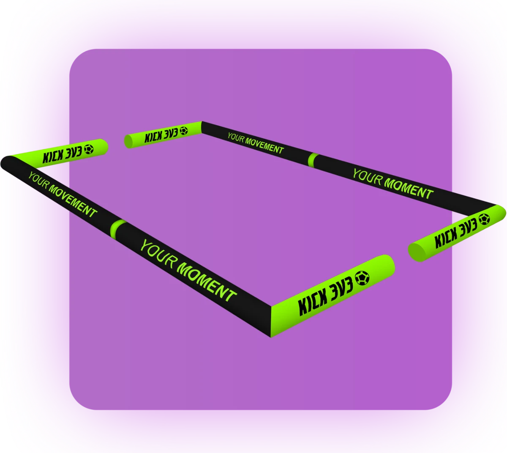

1.1Rosters. Teams carry 3 to 6 players. Three play at a time.
1.2Divisions. Divisions run U7 through U18 and are set by birth year. Players may play up an age group but not down. Final team placement follows rule 1.4.
1.3Boys, girls and coed. Boys, girls and coed divisions are offered when enough teams register for each. A team is never placed in a coed division without its consent.
1.4Division placement. Our goal is to place every team where the competition is even, so games stay fun and competitive. Teams may not always land in the division they selected. When too few teams register in a division to split it into gold, silver and bronze, a team may be moved to a higher or lower division based on what the tournament needs. Without a team's consent, it will never play against a team more than 1 year apart from the division it selected, and it will never be placed in a coed division.
1.5Roster changes. Rosters lock at check-in. Changes after that need tournament director approval.
1.6Solo players. Individuals who register solo are placed on a team by the tournament staff.
Section 02
The Field

One of our inflatable fields. Low tube walls surround the field, with an opening at each end where the goal sits.
2.1Inflatable walls. Every game is played inside an inflatable walled field. The walls are part of the field, and the ball is live when it bounces off them.
2.2Stay off the walls. No climbing, sitting, leaning or hanging on the walls at any time, for players or spectators.
2.3Spectators outside. Only players and the referee are allowed inside the walls. Coaches and parents cheer from outside.
2.4Where to stand. Venue sizes and layouts vary, so staff may adjust these spots, but in general: players not in the game and coaches stand behind their own goal, the one their team is defending. Referees stand outside the field near the halfway line and may step onto the field when needed.
Blue teamWhite teamC CoachReferee
Each team's subs and coach wait behind the goal they are defending. The referee works from outside the walls near the halfway line and may step onto the field for a better view. Exact spots can shift with the venue, so follow staff directions on game day.
Why the walls matter: the ball almost never stops, so players get far more touches, quicker decisions and more goals than in a normal game.
Section 03
Game Format
3.1Game length. Each game is one 12-minute running clock. The clock stops only for injuries or at the referee's discretion.
3.2Guaranteed games. Every team plays a minimum of 4 games within about a 5-hour block, with a chance to play a 5th game for the championship.
3.3Kickoff. A coin toss decides first possession, and the game starts with a kickoff from the center. After a goal, play restarts as described in rule 3.4.
3.4After a goal: touch your end line. After scoring, every player on the scoring team must run back and touch their own end line. Touching anywhere along the inflatable wall at their own goal end, or their own goal, counts. Meanwhile, the team that was scored on gets the ball out of the net and waits. Once the scoring team has touched back, the team that was scored on restarts with an indirect kick. If either team breaks this rule, any goal it scores is immediately disallowed and the ball is turned over to the other team.
3.5Championship game. After the 4 guaranteed games, the top teams in each division play a 5th game for the championship. [CONFIRM: how teams qualify, e.g. top 2 in the standings.]
3.6Ties in the championship: 1v1 golden goal. A tied championship game is decided by a 1v1 golden goal. Each team sends 1 player onto the field. The two players stand back to back at the center with the ball between them. On the whistle, the referee drops the ball and the two play it out. The first goal wins the championship. If the ball goes out or there is a foul, the referee restarts with a new ball drop at the center. If no one scores within 2 minutes, each team sends in a fresh player and the ball drops again, repeating until someone scores. Once every player on the roster has had a turn, the rotation starts over in the same order. The players on each team choose who plays the 1v1, not the coaches. We ask coaches to let the kids make the call.
Section 04
Play, Restarts and the Goal Zone
4.1Ball out of the field. If the ball leaves the walls, the opposing team restarts with a kick-in from where it went out. Kick-ins are indirect: the ball must touch a second player before a goal counts. Opponents must stay at least 3 feet from the ball until it is kicked.
Kick-inBall over the wallWhite kicks the ball out over the wall. Blue restarts with an indirect kick-in from the spot where it went out. White stays at least 3 feet away until the ball is kicked.Blue kick-in from that spot. Indirect, 3 feet back.
4.2Free kicks. All free kicks are indirect: the ball must touch a second player before a goal counts. Defenders must give 3 yards. A free kick shot straight into the goal is a goal kick for the defense.
LegalIndirect free kickFree kicks are indirect. The ball must touch a second player before a goal counts. Defenders give 3 yards.Pass first, then shootNo goalShooting straight from a free kickA free kick that goes straight into the goal without touching anyone else does not count.No goal. Goal kick for the defense.
4.3No offside. There is no offside in the Chaos Cup.
LegalNo offsideAn attacker can wait behind the last defender and receive a pass. There is no offside, as long as they stay out of the zone.Play on
Goal Zone · Rules 4.4-4.6 explained
Nobody plays in the zone. Outside it, defend however you want.
Every goal has a marked zone in front of it. Refs don't judge intent or where a player "should" be. They only ask one question: is anyone playing inside the zone? Pressure, cover, balance and dropping back to protect the goal are all good soccer, as long as it happens outside the line.
4.4The Goal Zone. Each goal has a half-circle zone marked in front of it, reaching about one goal-width (6 feet) out from the goal line. [CONFIRM zone size and how it is marked]
4.5Nobody in the zone. Players from both teams must stay out of the zone. No one may stand, stop or touch the ball inside it. Running through it while chasing play is fine. Outside the zone, all normal defending is legal: pressure, cover, dropping back in front of the goal and blocking shots with your body.
4.6Zone violations. If a player stops in or touches the ball inside the zone, the other team gets an indirect free kick from the top of the zone, and it counts as a team foul. A goal scored from inside the zone does not count.
Defending teamAttacking teamBallGoal ZoneHalfway line
LegalCompact defendingTwo defenders drop in tight just outside the zone while one pressures the ball. This is pressure, cover and balance. Legal.Play onLegalBlocking a shot from outsideA defender steps into the shooting lane and blocks with their body, standing outside the zone. Legal.Play onNot legalDefending from inside the zoneA defender stands in the zone to guard the goal. The zone is off limits to everyone.Free kick at the top of the zone + team foulNot legalAttacking from inside the zoneAn attacker dribbles into the zone and shoots. The zone is off limits to both teams, so there is nowhere to hide from a marker.No goal. Free kick for the defense + team foul.
4.7Hands. Handling the ball anywhere on the field is a foul.
Section 05
Fouls and Safety
5.1No slide tackles. Players stay on their feet. Slide tackles result in a free kick for the other team.
5.2Heading. No heading for U11 and younger. Intentional headers result in an indirect free kick for the other team.
5.3Wall play. The walls keep the ball in play, but they are not a place to battle or hide the ball. Any physical play on or around the walls, such as pushing, pinning, leaning on or checking an opponent into a wall, is an immediate foul. So is stalling play along the walls, such as trapping or shielding the ball against a wall to hold it or waste time. A player who keeps the ball pinned against the wall for more than 3 seconds without trying to play it is stalling. Every wall foul counts toward the team's foul total under the 3-foul rule (5.5).
5.4Dangerous play. High kicks, reckless challenges and rough play will be called. Repeat offenders may sit out the rest of the game.
3-Foul Rule · Rules 5.5-5.6 explained
Only after a team's 3rd foul
This special free kick from half happens only when a team reaches 3 fouls. Every other free kick is taken from the spot of the foul and is indirect, as in rule 4.2.
5.53-foul rule. The referee tracks team fouls each game. When a team commits its 3rd foul, the other team gets an uncontested free kick from the halfway line, and that team's foul count resets to 0.
5.6Taking the 3-foul free kick. Every player except the shooter must stay behind the halfway line and at least 5 feet from the shooter. The moment the shooter touches the ball, everyone can go for it and regular play continues.
3rd foul: setupLining up the 3-foul free kickThe shooter stands on the halfway line with the ball. Every other player, from both teams, lines up at half at least 5 feet from the shooter.The whole attacking half is open3rd foul: liveThe moment it is kickedThe shooter kicks the ball from the halfway line. The moment it is kicked, everyone can chase it and regular play continues. The fouling team's count is back to 0.Play on
5.7Injuries. The referee stops the clock for any injury. An injured player must sub out.
Section 06
Substitutions
6.1On the fly. Teams may sub at any time without stopping play.
6.2Clean swap. The player coming off must be out of the field before the new player enters. Too many players means a free kick for the other team.
Section 07
Scoring and Standings
7.1Points. Win 3, tie 1, loss 0.
7.2Goal differential cap. Goal differential counts a maximum of +5 per game.
7.3Tiebreakers, in order. Head-to-head result, goal differential, fewest goals allowed, then a coin flip.
7.4Live results. Scores, schedules and standings are posted live on PlayMetrics.
8.1Check in early. Check in at the tournament desk at least 30 minutes before your first game.
8.2Be ready. Teams must be at their field when the previous game ends. Games start on time.
8.3Forfeits. A team not ready 5 minutes after its scheduled start forfeits. A forfeit counts as a 3-0 win for the opponent.
8.4Short-handed. A team may play with 2 players rather than forfeit. [CONFIRM]
Section 09
Equipment
9.1Shin guards. Required for every player in every game.
9.2Shoes. Allowed shoes depend on the playing surface. Each event page lists the surface and the shoes allowed. Cleats are never allowed on gym floors.
9.3Pinnies. Every team is assigned pinnies at check-in and wears them for the entire tournament. This avoids color conflicts and keeps transitions between games quick and simple.
9.4Jewelry. No jewelry, watches or hard hair accessories.
9.5Balls. Game balls are provided by the tournament.
Section 10
Conduct
10.1Referees are final. All referee decisions are final. Only the team captain may ask a referee a question, calmly and between plays.
10.2Zero tolerance. Abuse of referees, players, staff or spectators is not tolerated. Players, coaches or spectators may be removed from the event.
10.3Sideline behavior. Cheer loud, cheer positive. No coaching from inside the walls.
10.4Respect the venue. We are guests of the host school. Leave every field and gym better than you found it.
The Chaos Cup way: creativity rewarded, bravery celebrated. Mistakes are part of the game. Encourage every player, on both teams.
Section 11
Refunds and Weather
11.1Refunds. [YOUR REFUND POLICY]
11.2Indoor events. Events are held indoors and run in any weather unless the venue closes.
11.3Schedule changes. The tournament director may adjust schedules or formats as needed. Updates are posted on PlayMetrics and Instagram @atomic_chaoscup.
Got it? Let's play.Turkey Takedown · Nov 20-21 · West Lake High School